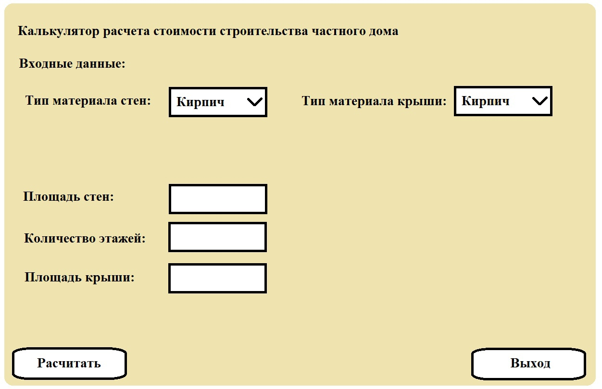
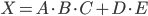

Калькулятор расчета стоимости строительства частного дома
Этот калькулятор был создан для того, чтобы помочь людям, которые хотят построить свой собственный дом, оценить примерную стоимость этого проекта. Строительство дома - это серьезное и ответственное дело, которое требует много времени, сил и денег. Поэтому важно знать, сколько будет стоить ваша мечта, и какие факторы влияют на ее цену. Наш калькулятор позволяет вам рассчитать стоимость дома на основе таких параметров, как площадь, количество этажей и материал для строительства. Таким образом, вы сможете спланировать свой бюджет и выбрать оптимальный вариант для вашего дома.
Язык программирования и среда разработки
Для создания калькулятора мы выбрали язык программирования Java. Данный язык был выбран так как Java - является одним из самых популярных и востребованных языков программирования в мире, который используется для разработки различных приложений для разных платформ. Java - язык высокого уровня, не требует длительной настройки перед применением.
Для разработки калькулятора мы использовали среду разработки Eclipse. Eclipse - это интегрированная среда разработки (IDE), которая предоставляет нам все необходимые инструменты для написания, компиляции, отладки и запуска нашего кода. Eclipse - это бесплатная IDE, позволяет вести кроссплатформенную разработку, имеет удобный маркет фреймворков и гибкую настройку JRE и других настроек.
Для создания графического интерфейса пользователя мы использовали фреймворк Windows Builder. Windows Builder - это инструмент для визуального проектирования GUI для Java. Он позволяет нам создавать окна, панели, кнопки, текстовые поля и другие элементы GUI с помощью перетаскивания и изменения свойств. Windows Builder имеет следующие достоинства:
- Windows Builder простой и удобный фреймворк, он позволяет быстро и легко создавать GUI без написания сложного кода, долгого изучения документации.
- Windows Builder имеет несколько удобных шаблонов для генерации различных окон
Описание программы и ее функциональности
Наша программа является калькулятором для расчета стоимости строительства частного дома. Она состоит из одной формы, которая содержит в себе элементы следующих типов: button, textbox, label, comboBox. Эти элементы имеют следующее назначение и функциональность:
Label отображают указания касательно использования программы, а также описывают назначение элементов типа textbox. Например, label “Площадь стен” объясняет, что нужно ввести в соответствующее текстовое поле.
TextBox служат для ввода текстовых данных. Например, textbox “Площадь” позволяет пользователю ввести площадь дома в квадратных метрах. Текстовые поля имеют ограничения на ввод данных: они должны содержать только цифры и точку, а также не должны быть пустыми или отрицательными.
Button реализуют расчет и вывод результата расчета на экран, выход из программы. Например, button “Рассчитать” запускает процесс расчета стоимости дома по заданным параметрам и выводит результат на label “Итоговая стоимость”. Button “Выход” закрывает программу.
Элемент comboBox служит для выбора информации касательно материала дома. Например, comboBox “Материал” позволяет пользователю выбрать один из трех вариантов материала для строительства

Входные и выходные данные программы
Входные данные для программы включают в себя четыре параметра: площадь дома в квадратных метрах A, количество этажей B, материал для строительства стен C и материал для строительства крыши E . Эти параметры задаются пользователем с помощью элементов типа textbox и comboBox. Выходные данные программы - это итоговая стоимость дома в рублях X, которая выводится на элемент типа label.
Алгоритм расчета стоимости дома
Формула расчета стоимости дома представлена ниже

где X – итоговая стоимость дома в рублях, A – площадь стен дома в квадратных метрах, B – количество этажей, C – стоимость возведения 1 квадратного метра стены в рублях (зависит от выбранного материала), D – площадь крыши дома в квадратных метрах, E – стоимость возведения 1 квадратного метра крыши в рублях (зависит от выбранного материала).
Варианты материала стен:
- кирпич (5000 рублей/м3);
- дерево (3000 рублей/м3);
- бетон (4000 рублей/м3).
Варианты материала крыши:
- кирпич (5000 рублей/м3);
- дерево (3000 рублей/м3);
- черепица (6000 рублей/м3).
Пример расчета стоимости дома:
Пусть площадь дома равна 100 квадратных метров, количество этажей равно 2, а материал для строительства стен и крыши соответственно кирпич и черепица. Тогда итоговая стоимость дома будет равна:
X = 100 2 5000 + 6000 * 100 = 1600000 рублей